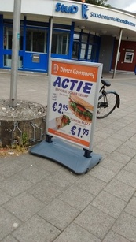

پیادهروی در دلفت-هشت جولای دوهزار و پانزده

کباب ترکی را با گوشت پرچرب گوسفند میپزند که در برابر حرارت ملایم آتش به تدریج کباب شده و لایهلایه بریده میشود. این البته مربوط است به زمانهای قدیم. در قرن بیست و یکم مخلوطی از آشغالگوشتهای مختلف اعم از مرغ، بوقلمون و گاو را با ماست و ادویههای تند چرخ میکنند و خمیر حاصله را با تکههای گوشت بوقلمون روی یک سیخ بزرگ فلزی سوار میکنند به شکل یک دوک خیلی بزرگ. روایت است که همهی اینها در کارگاهی در آلمان صورت میگیرد و بستهبندی شده صادز میشود به هزاران کبابترکی فستفود شدهی اروپایی. گوشت خشک و شور را روی آتشی تند میسوزانند و با کوهی از مایونز میمالند به نانی که میبایست تازه از تنور بیرون آمده باشد. حاصلش ساندویچهایی است که به قول سیاوش به جای سیستم گوارش، سیستم ایمنی بدن را فعال میکند. با ادای احترام به معدود کباب ترکیهای همچنان پرمزه.